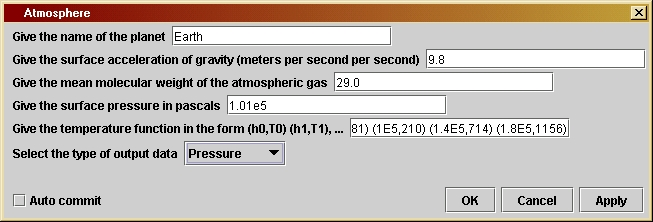
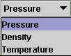

Atmosphere
|
The program gives a good model of the atmosphere except at its top,
where the physics is more complex than we can capture in the ideal gas
law.
The parameter window of Atmosphere (shown here) allows the user to choose different planets. The first parameter is for the name of the body. The second is the surface gravitational acceleration, which is assumed constant over the height of the atmosphere. The third is the mean molecular weight of the gas in the atmosphere, which depends on its composition. This is a number that is given in Table 7.1 for several bodies. The fourth parameter is the surface pressure, which the user should also take from the table. The fifth parameter is a list of values of the temperature at different heights in the atmosphere, where the heights are given in meters and the temperature in absolute Kelvins. the list must have the form of pairs of numbers within parentheses, separated by commas. The pairs are separated only by optional spaces. You can give as many such measurements as you have available. The program will use interpolation (see below) to find temperature values in between the measured locations.
The
final parameter
is a drop-down list (called a choice box) where the user chooses what
function
to output: pressure, density, or temperature in the model atmosphere. When
you select the list it looks like the image at the left. Each of these
has different units and a different scale, so they are not designed to
be plotted on a single graph. Just plot each in turn for the same
parameters that determine the model.
Like the dynamical program Orbit,
this program includes a loop. In this loop we step upwards in altitude
rather than forwards in time. The equation of hydrostatic equilibrium
(Equation
7.1) is implemented by the following code within this loop:
p[j] = p[j-1] - gAccel * rho[j-1] * dh;
The pressure drops by the buoyancy force needed to support the weight
of the next layer of gas. However, before we can go on to the next step
in altitude, we have to get the density at the current level from the
pressure
we have just computed. This requires the ideal gas law and a value for
the temperature. Given those, the line we use is
rho[j] = p[j] * q / Temp[j];
where q is a variable that contains
all
the constants in this equation and Temp
is
an array giving the value of the temperature at the current height.
This
temperature is not trivial to compute, since generally speaking there
is
no measurement at the given height. The program uses a special method,
called getTemp, to interpolate between
measured
values. (Its code is reproduced below.) The way this is done is
described
in Investigation 7.3, with one addition: above the height of the
highest
measurement, there is no further point for interpolation, so the
program
finishes off the height of the atmosphere by assuming a power-law
relation
between density and pressure, for no particularly good reason except to
keep the program simple and the extent of the atmosphere finite.
The program has to stop when it finds the top of the atmosphere,
which
is where the pressure goes to zero. It checks for this at each step of
the loop. If the program does not reach the top in the finite number of
steps specified, then it will execute again with a larger step size.
Therefore
the "for" loop for stepping upwards in
height
is enclosed within a "while" statement
which
looks at the value of the integer lastStep, which starts out zero and
is
only made positive when the last step has been reached.
/*
gAccel is the value of the
acceleration
of gravity at the surface of
the planet (bottom of the
atmosphere),
in SI units (m/s^2). Given by
the user in the user interface
window.
*/
private double gAccel;
/*
mu is the mean molecular weight
of the atmospheric gas, which is defined
as the average mass, in units of
the proton mass, of all the atoms,
molecules, ions, electrons, etc
that move freely in the atmosphere.
It is given by the user in the user
interface window.
*/
private double mu;
/*
p0 is the pressure of the atmosphere
at its base (the surface of the
planet), in pascals. Given by the
user in the user interface window.
*/
private double p0;
/*
temperatureArray is a String that
contains the temperature as a
function of altitude. This is given
by the user in the user
interface window, in the form
(h0,T0)
(h1,T1) (h2,T2) ..., where
h is in meters and T in kelvin.
The program converts this into
two double arrays h and T.
*/
private String temperatureArray;
/*
outputType is a String which governs
what kind of data will be
output. All data is output as a
Curve with x-values being the
altitude and y-values being one
of three choices: pressure,
density, or temperature. The user
chooses one of these three
in the user interface window.
*/
private String outputType;
/*
Define double arrays h, T that hold
the numerical values of
the altitude at which the
temperature
is given (h[]) and the
values of the temperature at those
altitudes (T[]). These
arrays are re-defined and given
values each time the parameter
temperatureArray is set.
Define the int measurements to hold
the length of these arrays.
*/
private double[] h,T;
private int measurements;
/*
Two constants: k is Boltzmann's
constant and mp is the mass of
the proton, both in SI units.
*/
private double k = 1.38e-23;
private double mp = 1.67e-27;
/*
Three constants used for the
computation
of the temperature at
the top of the atmosphere, above
the highest altitude where the
temperature has been measured.
- reachedTop is a boolean that is
set to false each time
process() is called,
and is then used by the method getTemp().
See the comments in
getTemp() below for details.
- power and beta are the constants
in the formula for the
temperature in the upper
region, T = beta * p^(power), where
p is the pressure at
that height and where "^" indicates raising
to a power. We fix the
value of power here, but the value of
beta must be computed
during the calculation. See the comments
in getTemp() below for
details.
*/
private boolean reachedTop = false;
private double power = 0.5;
private double beta;
/*
Define
variables
needed for the calculation:
- q is a
combination of constants in the ideal gas law, used often.
- rho0 is
the density at the bottom of the atmosphere.
- scale
is the scale-height of the atmosphere, roughly the distance
over which the pressure will fall by a factor of 2.
- dh is
the size of the step in altitude that the program will make.
- arrays
alt (height), p (pressure), rho (density), and Temp (temperature)
hold the values of the associated physical quantities at the
successive altitude steps. The arrays are initially given 1000
elements. The choice of altitude step dh is designed to
ensure that the top of the atmosphere (where p = 0) is reached
in fewer than 1000 steps. Then give the values of the first
elements of the arrays.
- lastStep
is an int that will hold the value of the array index
associated with the top of the atmosphere. Set it to zero and
use it as a test of whether the top has been reached (see below).
- j is a
loop counter.
*/
double q = mp * mu /
k;
double rho0 = p0 * q
/ T[0]; //use ideal gas law to get density
double scale = p0 /
gAccel / rho0;
double dh = scale /
200.;
double[] alt = new
double[1000];
double[] p = new
double[1000];
double[] rho = new
double[1000];
double[] Temp = new
double[1000];
alt[0] = 0;
p[0] = p0;
Temp[0] = T[0];
rho[0] = rho0;
int lastStep = 0;
int j;
/*
Set
reachedTop
to false at the beginning of the computation.
*/
reachedTop = false;
/*
Do the
calculation
as long as the top has not been reached.
*/
while ( lastStep ==
0 ) {
/*
Do calculation step by step, using the equation of hydrostatic
equilibrium (in the second line of the loop).
*/
for ( j = 1; j < 1000; j++ ) {
alt[j] = alt[j-1] + dh;
p[j] = p[j-1] - gAccel * rho[j-1] * dh;
if ( p[j] < 0 ) {
lastStep = j; //stop when the pressure goes negative
break;
}
Temp[j] = getTemp( alt[j], p[j] );
rho[j] = p[j] * q / Temp[j]; //ideal gas law
}
/*
If we reach this point and lastStep is still zero, then we have
used 1000 steps and not yet reached the top. We must start the
loop again with a larger step dh so that we can reach the top in
1000 steps. The next line of the code resets the value of dh, and
then when we reach the end-bracket of the "while"-loop the test
in the loop will evaluate to true and the "for"-loop will be
done again with this step-size.
If we reach this point and lastStep is no longer zero, then we
have finished the calculation. The next step (changing dh) will be
executed but we will leave the "while"-loop and so the new value
of dh will not be used.
*/
dh *= 2.;
}
/*
Now prepare
output arrays depending on what output data type has
been
selected
by the user. The arrays are only long enough to
contain
the number of points to the top of the atmosphere. Since
the value
of the variable lastStep is the step where the pressure
first went
negative, if we create arrays of length lastStep then
this value
will be excluded, since such arrays start at index 0
and finish
at index lastStep-1. We attach to each output Curve
a title
(which will appear on the graph legend), and we attach
to the first
output Curve the axis labels.
*/
double[] finalH = new
double[lastStep];
Curve outData =
null;
String unitLabel = "";
if
(outputType.equals("Pressure"))
{
double[] finalP = new double[lastStep];
for ( j = 0; j < lastStep; j++ ) {
finalH[j] = alt[j];
finalP[j] = p[j];
}
outData = new Curve( finalH, finalP );
unitLabel = " (Pa)";
}
else if
(outputType.equals("Density"))
{
double[] finalRho = new double[lastStep];
for ( j = 0; j < lastStep; j++ ) {
finalH[j] = alt[j];
finalRho[j] = rho[j];
}
outData = new Curve( finalH, finalRho );
unitLabel = " (kg/m^3)";
}
else if
(outputType.equals("Temperature"))
{
double[] finalT = new double[lastStep];
for ( j = 0; j < lastStep; j++ ) {
finalH[j] = alt[j];
finalT[j] = Temp[j];
}
outData = new Curve( finalH, finalT );
unitLabel = " (K)";
}
outData.setTitle(outputType
+ " for the atmosphere of " + planetName);
outData.setIndependentLabels(0,"altitude
(m)");
outData.setDependentLabels(0,outputType
+ unitLabel);
output( outData );
}
/*
Method to compute the temperature
at any height from the given
measurements at specific altitudes.
There are three cases:
(1) The height is below the first
measured altitude. In this
case we
simply use the temperature at the first measured
altitude,
i.e. we take the temperature to be constant from
the ground
up to the first measured value.
(2) The height is between two
measured
altitudes. This is the
normal case
over most of the atmosphere. We find the
temperature
between two measurements by linear interpolation,
which means
that we draw a straight line on a graph of
temperature
versus altitude between the two measurements,
and we use
the temperature on the line at the actual
required
height.
(3) The height is above the highest
measured altitude. Here
we cannot
make the simple constant-temperature assumption
of case
(1), since an isothermal atmosphere goes on
forever.
Instead, we assume a temperature law of the form
T =
beta*pressure^(power),
where beta and power are
constants.
We set the value of power = 0.5 in the
initialization
part of the code at the very beginning,
but we do
not know ahead of time what value of beta to
use. This
is determined by insisting that the temperature
law join
continuously onto the straight line between the
last two
measured points, and to do that we need to know
the pressure
at the height of the last measurement. We
only know
this as we are moving through the calculation,
so the value
of beta can only be computed at the step
where we
first reach the highest measured point. To keep
track of
when this happens, we use the boolean variable
reachedTop,
which is false at first. If the height is
greater
than or equal to that of the highest measurement,
we test
the value of reachedTop. If it is false, as it
will be
the first time we reach this altitude, then we
compute
beta from the local value of the pressure, and
we then
set reachedTop equal to true. This ensures that
the next
and subsequent times we reach past the
altitude
of the highest measurement, we will not
re-compute
beta. In both cases we then compute the
temperature
from our pressure law.
*/
private double getTemp( double height, double
pressure ) {
if ( height <= h[0]
) return T[0]; // return if height low
if ( height >=
h[measurements
- 1] ) { // do if height high
if ( !reachedTop) {
beta = T[measurements - 1] / Math.pow(pressure, power);
reachedTop = true;
}
return beta * Math.pow(pressure, power); //return when high
}
int j = 1; // only reach
this step if between measured heights
while ( height > h[j]
) j++;
return T[j-1] + (T[j]
- T[j-1])/(h[j] - h[j-1])*(height - h[j-1]);
}